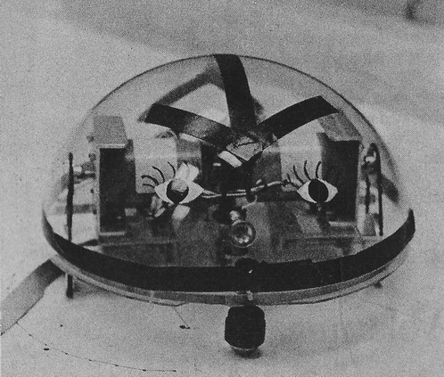
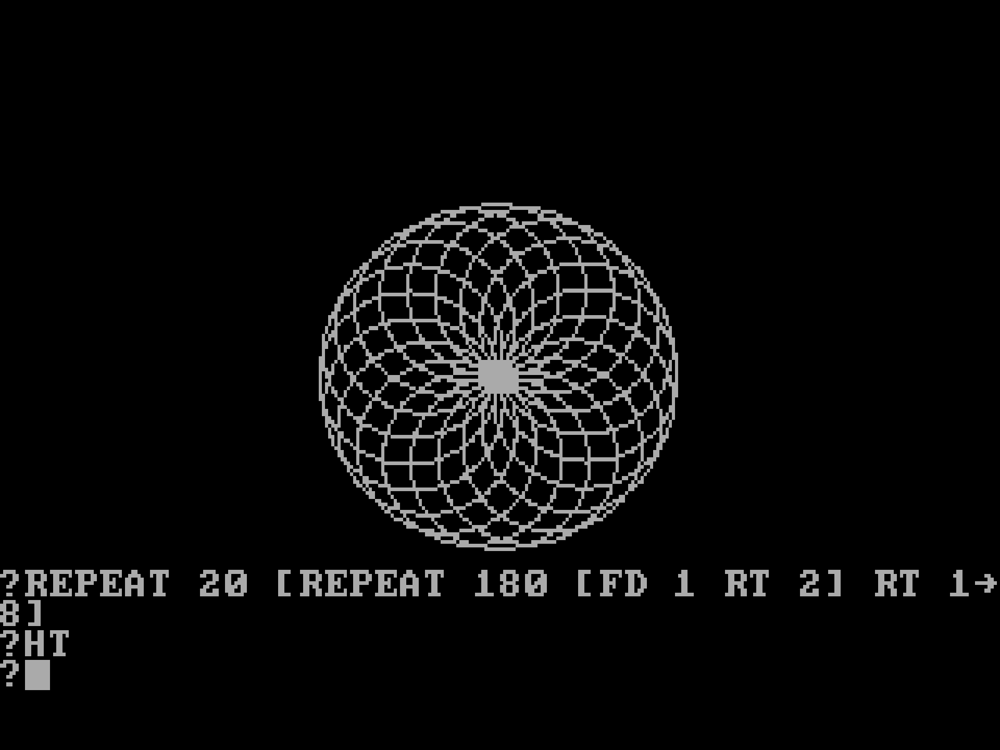

Week 1 - Intro to the course and Turtle Geometry
Date: 2024-01-28
Today
- Hello!
- Intro
- What will we be learning?
- Syllabus and our plans for the semester
- Turtle Geometry and Computing with LOGO
- Begin devlogs
- HW: First devlog
Trailer
multiple neighborhood cellular automata, by softology
Intro
This class will be taught like a lab.
Each week we will do at least one experiment or workshop where we explore new ideas in art and code. I will introduce at least one new concept or technique, then students will work in small groups or solo in a “jam” style, spending time experimenting and building projects that expand on the concept.
STUDENTS ARE EXPECTED TO DOCUMENT THEIR WORK EACH WEEK OF THE SEMESTER THROUGH A DEVELOPMENT LOG (DEVLOG). This is also one of the primary ways we will evaluate student work and progress throughout the semester.
Hello!
- Who is your instructor?
What will be learning?
- Who are we?
- Name you prefer to go by
- pronouns
- previous art, music, dance-making experience or interests (etc) and any previous programming experience
Syllabus
We have one!
- Get feedback on student interests, which will influence what we learn in this course
Workshop: Turtle Computing with LOGO
Turtle Lesson 1
Turtles Standard Route
Bits and Bytes episode: LOGO
Bits and Bytes was the name of two Canadian educational television series that taught the basics of how to use a personal computer. It was aired in 1983.
Beginning LOGO

example LOGO commands with visual result (image from
Logo Foundation)
Logo is an educational programming language, designed in 1967 by Wally Feurzeig, Seymour Papert, and Cynthia Solomon. A general-purpose language, Logo is widely known for its use of turtle graphics, in which commands for movement and drawing produced line or vector graphics, either on screen or with a small robot termed a turtle. The language was conceived to teach concepts of programming related to Lisp and only later to enable what Papert called “body-syntonic reasoning”, where students could understand, predict, and reason about the turtle’s motion by imagining what they would do if they were the turtle. There are substantial differences among the many dialects of Logo, and the situation is confused by the regular appearance of turtle graphics programs that are named Logo.
The first working Logo turtle robot was created in 1969. A display turtle preceded the physical floor turtle. Modern Logo has not changed very much from the basic concepts predating the first turtle. The first turtle was a tethered floor roamer, not radio-controlled or wireless. At BBN Paul Wexelblat developed a turtle named Irving that had touch sensors and could move forwards, backwards, rotate, and ding its bell.

LOGO Robot “with eyes” at MIT, 1974, via Harvey
Cohen
Logo’s most-known feature is the turtle (derived originally from a robot of the same name),[5] an on-screen “cursor” that showed output from commands for movement and small retractable pen, together producing line graphics. It has traditionally been displayed either as a triangle or a turtle icon (though it can be represented by any icon). Turtle graphics were added to the Logo language by Seymour Papert in the late 1960s to support Papert’s version of the turtle robot, a simple robot controlled from the user’s workstation that is designed to carry out the drawing functions assigned to it using a small retractable pen set into or attached to the robot’s body.
As a practical matter, the use of turtle geometry instead of a more traditional model mimics the actual movement logic of the turtle robot. The turtle moves with commands that are relative to its own position, LEFT 90 means spin left by 90 degrees. Some Logo implementations, particularly those that allow the use of concurrency and multiple turtles, support collision detection and allow the user to redefine the appearance of the turtle cursor, essentially allowing the Logo turtles to function as sprites.

A more complex LOGO program with loops (repeat), via Wikipedia
Apple LOGO II
Apple LOGO II on Internet Archive
note: This will start up an emulator of a classic computer inside your web browser. It will be slow! Hit the power button to start, then wait a minute for it to fully boot up inside the browser. You can fullscreen for the full effect of having it feel like you’re running this classic computer.
Example commands
FORWARD 100
FORWARD RANDOM 100
LEFT 90
REPEAT 10 [LEFT 30 FD 30]Apple LOGO commands
A short list of commands. There are more you can look up in the bookmarked notes below.
CLEARSCREEN - Clear the screen. (Shorthand: CS)
HIDETURTLE - Don't show the turtle cursor. (HT)
SHOWTURTLE - Show the turtle cursor. (ST)
HOME - Move back to the home position.
FORWARD steps - Move forward steps. (FD)
BACK steps - Move back steps. (BK)
LEFT degrees - Turn left this many degrees. Negative degrees work too, they'll turn it right. (LT)
RIGHT degrees - Turn right this many degrees. (RT)
SETHEADING degrees - Turn to an absolute heading of degrees. (SETH)
SETPOS [x y] - Set the position to x, y coordinates. These are Cartesian, so 0,0 is the middle of the screen.
SETX x - Set the horizontal position to x.
SETY y - Set the vertical position to y.
RANDOM n //returns an integer between 0 and n
PRINT x //prints out contents of x on consoleLOGO for Apple II resources
- Apple LOGO II reference manual - online book on the Internet Archive
- Program in Logo on an Apple II - PDF by Matthew Goodrich
Draw an image. Screenshot it and submit.
Further Explorations in LOGO with JSLogo
Working in groups or solo, transition to working with JSLogo, an implementation of the LOGO language written in Javascript for the Web.
JSLogo includes an online reference, library of your procedures (functions), history, example code, extras, links to documentation, and even collaboration features.
To figure out
- How to do looping (repeats)
- How to call a procedure (functions)
- How to pass in arguments (variables) to a procedure
- How to work with a list
- How to pick randomly (such as numbers, or items from a list)
Making a Quilt Patch
In order to create a communal quilt, we need to agree upon dimensions. Let’s use the following procedure, frame, as the base for all of our patches. It creates a black 100 X 100 square.
to frame
pd
repeat 4 [fd 100 rt 90]
endRules: The only rule is that your turtle must return to its original position and heading at the end of the design.
idea source: Gary Stager Old Fashioned Logo Quilt-Making
Resources
- General intro to LOGO programming - link
- Learning With Apple LOGO - published 1984
Homework
Reading
- Please read pages 11 (starting at Decentralization in Technologies) to page 31 (the end of the section on LEGO/Logo and Artificial Life of Turtles, Termites, and Traffic Jams: Explorations in Massively Parallel Microworlds, about 30 minutes. It is available to read online via our library. Note: scroll to page 11 and then you can click Google Drive and it will let you export pages to Google Drive.
Project 1: A Logo Crazy Quilt
For this project your job is to define digital ‘quilt blocks’ that can be drawn in LOGO, then have your Turtle create a random block crazy quilt constructed out of these pieces.
Steps: * Create a standard quilt ‘block’ recipe. The turtle should start at the top left, draw a block, then finish at the top right corner (so that it can begin drawing the next). * Then make more quilt blocks of many variations. * Write a program that starts the turtle at the top left, picks a random block to draw, then another, then another…Every 6 blocks the turtle should move to the left side of the quilt and one row down. The turtle should draw 8 rows of 6 blocks.
Note: You are allowed (and encouraged) to work collaboratively on this project.
Method:
Assume a standard square block size of 40 by 40 pixels. Note: we may alter this size in class if we deem it too small.
Create a function to move your turtle to the top left.
Create a function to draw a quilt block.
Create more quilt blocks as functions.
Create a function that is a random chooser that will pick a quilt block function at random to draw.
Create a row function that draws 6 random blocks then moves to the left side and down one block.
Put it all together.
Writing
- Review syllabus
- Get a notebook for class that you will bring each week
- Write your first log. What did you work on today? Include screenshots of work as you went as well as anything ‘finished’ such as a generated quilt.
Start with a step by step description of what you worked on in order, including images potentially.
Next, describe particular areas of investigation, things you figured out, things you got stuck on. You can also describe areas that appear promising or most compelling, and what questions you still might have or areas to explore further.
What are your thoughts on LOGO itself? Do you find the ideas behind the language compelling? How does it relate to things you already know (or not?)
Bonus
Atari Cambridge Research - LOGO programs to produce dances and dancing marionettes and maze programs navigable via Joystick.
Turtle icon by Freepik